FMアップル
札幌市豊平区
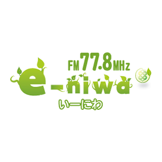
e-niwaFM
恵庭市
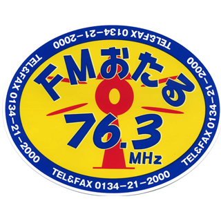
FMおたる
小樽市
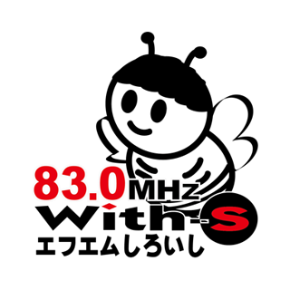
エフエムしろいし
札幌市
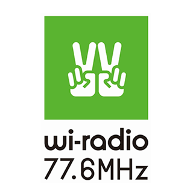
Wi-radio
伊達市
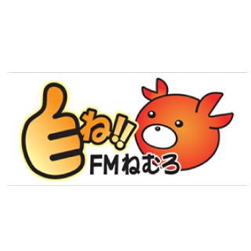
FMねむろ
根室市
FMあばしり
網走市
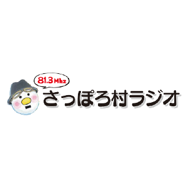
さっぽろ村ラジオ
札幌市
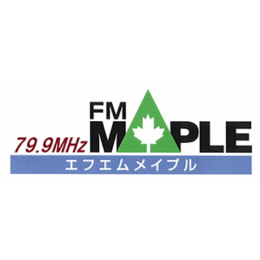
FMメイプル
北広島市
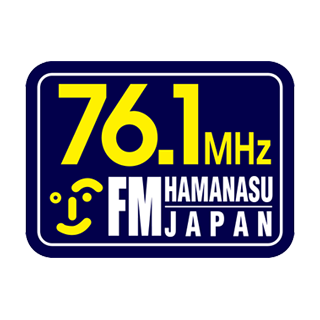
FMはまなす
岩見沢市
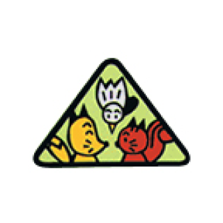
三角山放送局
札幌市西区
FM JAGA
帯広市
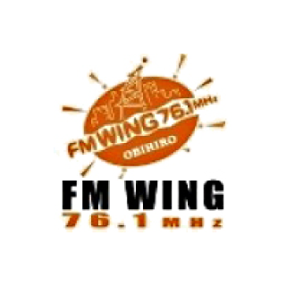
FM WING
帯広市
RADIOワンダーストレージFMドラマシティ
札幌市厚別区
FMくしろ
釧路市
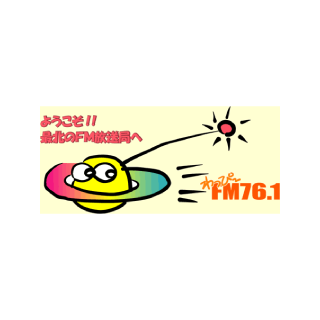
FMわっぴ〜
稚内市
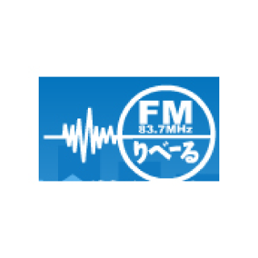
FMりべーる
旭川市
ラジオニセコ
ニセコ町
ラジオカロスサッポロ
札幌市